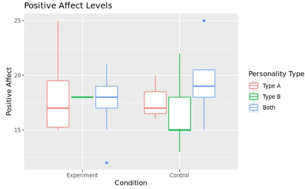
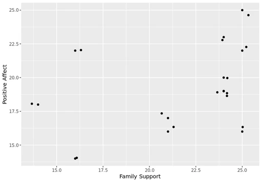

University of Maryland · Behavioral Research
Family Support vs. Positive Affect
Quantitative research study exploring the relationship between perceived family support and positive affect through survey methodology, statistical analysis in R, and evidence-based interpretation.

Overview
Research Overview
This study investigated whether perceived family support influences positive affect and whether personality type moderates that relationship.
Participants completed a Qualtrics survey, and responses were analyzed in R using a two-way ANOVA to evaluate relationships between the study variables.
Research Question
Does perceived family support influence positive affect, and does personality type change that relationship?
Hypothesis
Participants primed to recall supportive family experiences would report higher positive affect, with Type B personalities expected to show the strongest outcomes.
Study Design
Independent Variable
Family Support
Participant Variable
Personality Type
Outcome Variable
Positive Affect
Experimental Design
A 2 × 3 combined experimental design examined whether family support condition and personality type independently, or together, influenced positive affect.
Skills Demonstrated
Research Process
Research Question
Literature Review
Study Design
Survey Development
Participant Recruitment
Data Collection
Statistical Analysis
Interpretation
Data Collection
Participants
28 undergraduate students
Students from the University of Maryland enrolled in PSYC300 were randomly assigned to one of two family support conditions based on the last digit of their university ID number.
Platform
Qualtrics
Used to build, distribute, and collect survey responses for the study.
Measures
Variables and psychological measures used to collect and contextualize participant responses.
Family Support
Participants reflected on either a supportive or unsupportive family experience to examine how recalling different experiences influenced positive affect.
Personality Type
Participants were asked to categorize themselves as:
- Type A: Driven, controlled, ambitious, organized
- Type B: Flexible, relaxed, open-minded, adaptable
- Both
Personality type was examined as a participant variable.
Self-Esteem
A standardized self-esteem measure was included to capture participants' overall sense of self-worth and provide additional psychological context.
Positive Affect (PANAS)
Positive affect was measured using five items from the Positive and Negative Affect Schedule (PANAS), a validated scale that assesses positive emotional states such as enthusiasm, alertness, and inspiration.
Data Analysis

Statistical Analysis
Survey responses were cleaned, visualized, and analyzed in R using descriptive statistics and a two-way ANOVA to examine the effects of family support and personality type on positive affect.

Key Findings
01
Family Support
Recalling a supportive vs. unsupported family experience did not significantly influence participants' reported positive affect.
02
Personality Type
Positive affect scores did not differ significantly across participants identifying as Type A, Type B, or both personality types.
03
Interaction Effect
Personality type did not change how participants responded to the family support manipulation.
Overall Statistical Conclusion
Statistical analysis using a two-way ANOVA found no significant main effects of family support condition (p = .98), personality type (p = .65), or their interaction (p = .62). Although the hypotheses were not supported, the study demonstrated the importance of using objective statistical analysis to evaluate research questions and draw evidence-based conclusions.
Reflection
This project taught me about the full process of conducting a research study. I learned that meaningful research isn't defined by a hypothesis being supported, but by the ability to create a detailed study, analyze data, and communicate the findings.
Through survey design, statistical analysis in R, and interpretation of results, I strengthened my ability to make evidence-based conclusions and developed skills that directly translate to user research and data-informed product design.
What I Gained